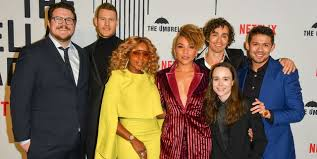

| The Umbrella Academy | |
|---|---|
|  | |
| Genre | Action Drama Black comedy Science fantasy Superhero |
| Created By | Steve Blackman |
| Based on | The Umbrella Academy by Gerard Way and Gabriel Ba |
| Developed by | Jeremy Slater |
| Showrunners | Steve Blackman Jesse McKeown |
| Starring | Eliot Page, Tom Hopper, David Castaneda, Emmy Raver-Lampman, Robert Sheehan, Aidan Gallagher, Mary J. Blige, Cameron Britton, John Magaro, Adam Godley, Colm Feore, Justin H. Min, Ritu Arya, Yusuf Gatewood, Marin Ireland, Kate Walsh, Genisis Rodriguez, Britne Oldford |
| Music by | Jeff Russo, Perrine Vergile |
| Country of Origin | United States |
| Orignal language | English |
| No. of seasons | 4 |
| No. of episodes | 36 |
| Production | |
| Executive producers | Steve Blackman, Jeff F. King, Keith Goldberg, Mike Richardson, Jeremy Webb, Gerard Way, Gabriel Bá |
| Producers | Kevin Lafferty, Sneha Koorse, Jason Neese |
| Production location | Toronto, Ontario, Canada Hamilton, Ontario, Canada Kitchener, Ontario, Canada |
| Cinematography | Neville Kidd, Craig Wrobleski |
| Editors | A. Good, Wendy Tzeng, Amy Fleming, Jonathan Schwartz |
| Running Time | 40–60 minutes |
| Production Companies | Borderline Entertainment, Dark Horse Entertainment, Universal Content Productions |
| Orignal release | |
| Network | Netflix |
| Release | February 15, 2019 (Season 1), July 31, 2020 (Season 2), June 22, 2022 (Season 3) |
The Umbrella Academy:
A Superhero Show Like No Other
In a universe overflowing with superhero tales, finding something truly unique is like searching for a needle in a haystack. Enter "The Umbrella Academy," Netflix’s delightfully bizarre and darkly comedic series that flips the genre on its head. If you're weary of cookie-cutter heroes in spandex saving the day with a wink and a smile, then strap in—because "The Umbrella Academy" is here to deliver a narrative as twisted as the family at its core.
A Dysfunctional Family of Super Misfits
At the heart of "The Umbrella Academy" lies a ragtag group of adopted siblings, each possessing their own peculiar powers, raised by the eccentric (and borderline abusive) billionaire, Sir Reginald Hargreeves. These aren’t your average heroes; they’re flawed, damaged, and often as dangerous to each other as they are to the villains they confront.

Meet Luther, aka Number One: a hulking figure with super strength and a serious inferiority complex. Then there’s Diego (Number Two), the knife-throwing vigilante with a rebellious streak that could rival a rockstar. Allison (Number Three) can alter reality with a mere whisper, yet struggles to control her own chaotic life. Klaus (Number Four), the chaotic medium who chats with the dead, is more likely to be found in a drunken stupor than saving the day. Number Five (no real name needed), a time-traveling assassin trapped in the body of a teenager, wields his wit as sharply as his weapons. Ben (Number Six), the ghostly sibling harboring tentacled horrors beneath his skin, and Vanya (Number Seven), who appears ordinary until she unleashes her true potential, round out this motley crew.
Let’s be real—the Hargreeves siblings put the "fun" in dysfunctional. They squabble, they bicker, and they make utterly questionable life choices, yet at the end of the day, they’re a family. A deeply flawed, occasionally murderous family, but a family nonetheless.
A Story Full of Twists, Turns, and Apocalyptic Stakes
"The Umbrella Academy" isn’t just about the wild powers of its characters; it’s about how those powers complicate their lives in ways that are both tragic and darkly humorous. The show dives deep into themes of identity, trauma, and the search for belonging, all while dangling the ever-looming threat of apocalypse. Because, of course, what’s a superhero story without the end of the world hanging in the balance?
Each season cranks up the stakes, pulling viewers deeper into a tangled web of timelines, conspiracies, and inevitable clashes between our heroes and the forces that seek to control them. Whether it’s a wild trip to the 1960s or an epic showdown with shadowy organizations, "The Umbrella Academy" keeps you guessing—and laughing—at every turn.
Why You Should Watch (If You Haven’t Already)
So, what sets "The Umbrella Academy" apart from the sea of superhero shows? For starters, its tone. The series masterfully blends dark humor with emotional depth, making it as much a dramedy as it is a superhero epic. The characters aren’t just larger-than-life—they’re relatable in their struggles with addiction, loss, and the quest for self-identity.
And let’s talk about the soundtrack. Oh, the soundtrack! "The Umbrella Academy" knows how to use music to elevate a scene, whether it’s a chaotic battle set to Tiffany’s "I Think We’re Alone Now" or a time-bending sequence synced to Queen’s "Don’t Stop Me Now." The eclectic music choices add another layer of enjoyment to an already rich viewing experience.
Visually, the show is a feast for the eyes. Its distinct style, with retro-futuristic vibes and comic-book-inspired aesthetics, makes every frame a work of art. It’s like stepping into a graphic novel come to life, where colors pop, action is dynamic, and the weirdness is cranked up to eleven.
Conclusion: Embrace the Weirdness
In a genre that often takes itself too seriously, "The Umbrella Academy" is a breath of fresh, slightly deranged air. It’s a show that doesn’t just ponder what it means to be a hero, but what it means to be human—flaws, mistakes, and all. Whether you’re drawn in by the superpowers, the family drama, or just the sheer unpredictability of it all, one thing’s for sure: "The Umbrella Academy" is a ride worth taking.
So, grab your umbrella (you’ll need it for the inevitable rain of chaos), settle in, and let the Hargreeves siblings take you on a journey unlike any other. You might laugh, you might cry, and you’ll definitely find yourself coming back for more.